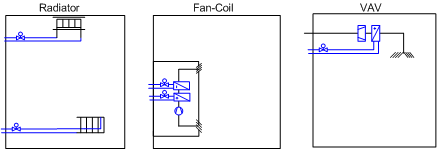
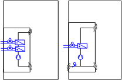

HVAC Room Control
HVAC plants and their HVAC devices in the room influence the room conditions in closed rooms. A pleasant room climate is achieved during occupancy by controlling temperature, humidity, and air quality.
HVAC plants in the room are divided up into plant families that differ in principle in design and how they act. The following plant families are supported:
- Radiators
- Chilled and heated ceilings
- Floor heating
- Fan coils*
- Variable air volume systems*
- Fan-powered box*
* may include additional radiators
HVAC Diagram Plant Families

Within an HVAC plant family, the differences are much less among family members. Examples for family members include the family Fan-Coil.

BACnet Priorities for HVAC Applications
The following table illustrates the priorities used in Desigo.
Priorities in HVAC | ||
Execution Order | Description | Example |
1 | Emergency mode 1 | ‒ |
2 | Emergency mode 2 | Life safety (fan cannot be switched due to smoke) |
3 | Emergency mode 3 | ‒ |
4 | Protection mode 1 | ‒ |
5 | Protection mode 2 | Locking via a dependent object (for example, the damper must be opened before the fan can be switched on). |
6 | Minimum on/off | ‒ |
7 | Manual operating mode 1 | ‒ |
8 | Manual operating mode 2 | Manual mode by system operator or on site |
9‒12 | Automatic mode 1‒4 | ‒ |
13 | Manual operating mode 3 |
|
14 | Automatic mode 5 | ‒ |
15 | Automatic mode 6 | Automatic by program (for example, temperature control) |
16 | Automatic mode 7 | ‒ |